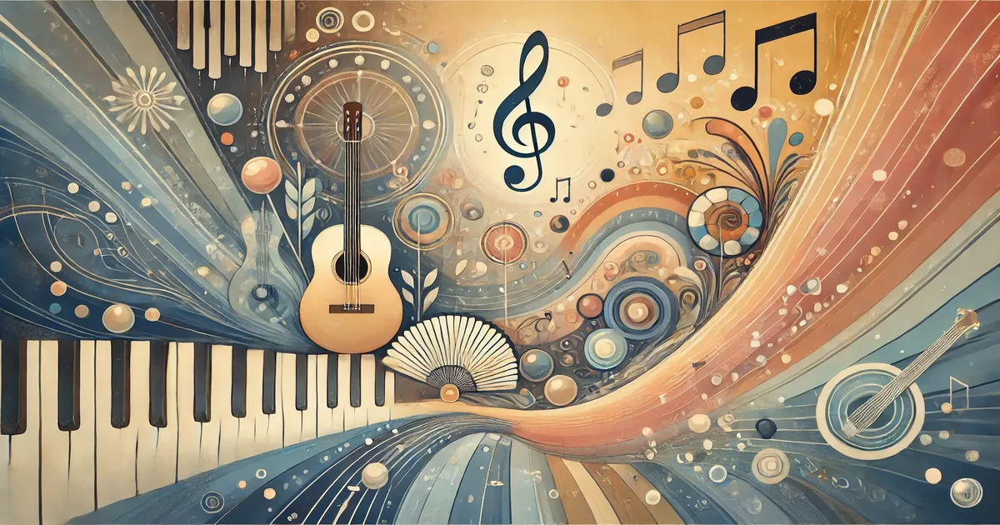

נעים מאוד
שמי שקד לאוגומר, מטפלת במוסיקה בקליניקה ובבתי ספר במערכת החינוך באזור עמק חפר והשרון ומדריכה סטודנטים לטיפול במוסיקה.
בוגרת תואר שני MA בטיפול במוסיקה מטעם אוניברסיטת חיפה וחברה באיגוד הישראלי לטיפול באמצעות אומנויות ובעלת תו תקן מטעמו.
אני גם מתופפת ומורה לתופים, בעלת ניסיון של מעל עשור בהוראת מוסיקה (תופים, פסנתר, תיאוריה של המוסיקה וטרום כלי לגיל הרך בקונסרבטוריונים) של ילדים ונוער עם מגוון צרכים מיוחדים; ASD, CP, קשב וריכוז, לקויות למידה, חרדות, קשיים התנהגותיים, קשיים חברתיים, נכויות פיזיות ועוד.
בקליניקה אני עובדת עם א.נשים מכל הגילאים, כאשר ההתמחות שלי היא ילדים ונוער.
בנוסף לכך, אני עוסקת במחקר בנושא שילוב חברתי של ילדים באמצעות גישה בשם תרפיה במוסיקה קהילתית, ומתמחה בעבודה עם קבוצות בגישה זו.
אני מאמינה כי כל אדם הוא/היא עולם במלואו ומתרגשת כל פעם מחדש מהיכרות עם העולם הזה תוך שמירה על העיקרון שעבור כל אחד צריך למצוא את הטיפול התואם והנכון לו, כי אני מאמינה שבטיפול אין ״חליפה״ אחת שתואמת לכל.
"מוסיקה מבטאת את אשר לא יכול להיאמר במילים ואינו יכול להיות מושתק." ויקטור הוגו
השירותים שלנו
- מפגשים אישיים לתרפיה במוזיקה
- מפגשי תרפיה קבוצתיים
- סדנאות וסמינרים
- תוכניות תרפיה מותאמות אישית